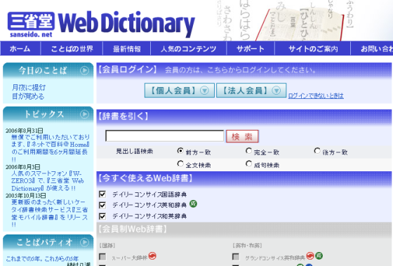
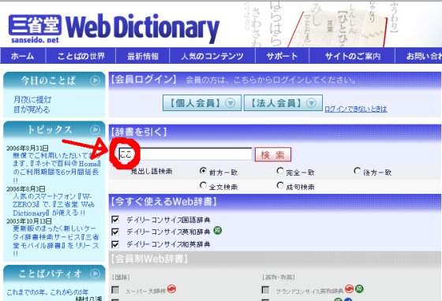
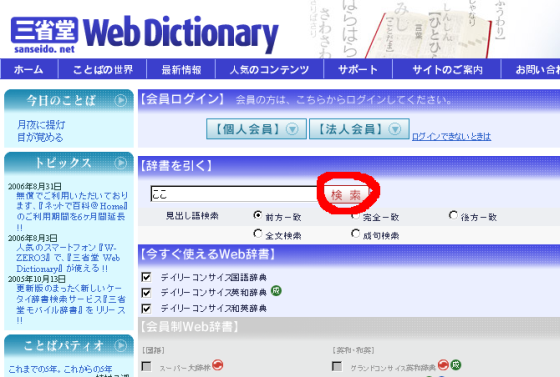
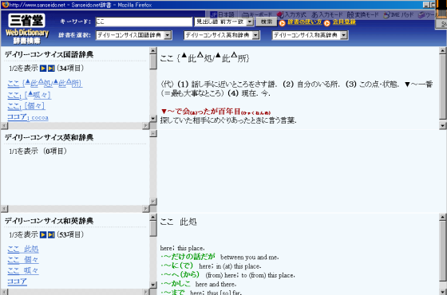
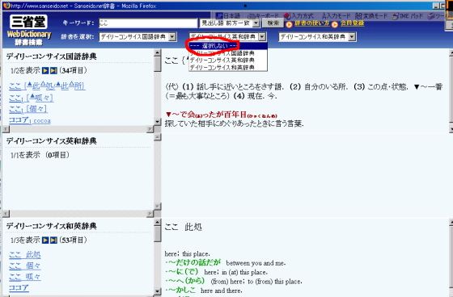
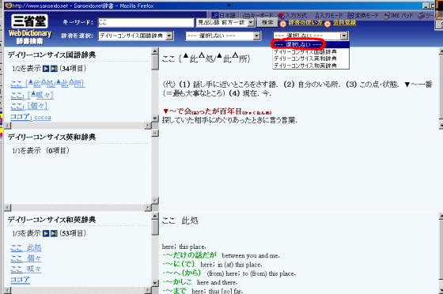
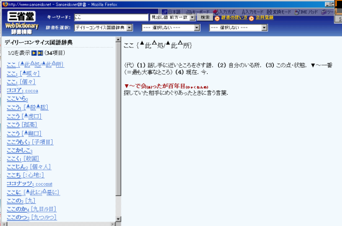
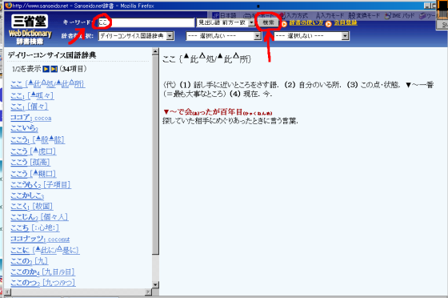

One of the more intimidating things about using a Japanese-Japanese dictionary for the first time is, well, that it’s all in Japanese. What’s a Japanese-loving student to do? How do you even use the thing? Well, I’d say that learning the vocabulary you need in order to use the dictionary is part of the fun. But, it does help to have an explanation. With that in mind, here is a guide on how to use the Sanseido Web Dictionary.
If you’re just getting started using Japanese-Japanese dictionaries, I recommend this dictionary because the entries (in the free version) are short, clear and concise. When you’re just starting out, a long Japanese explanation may just scare or confuse you. With this dictionary, that shouldn’t be the case.
1. Navigate to the Sanseido website. At this writing, the page should look something like this.

2. Under 【辞書を引く】(じ・しょ を ひ・く look up in the dictionary) is a textbox. This is the searchbox. There, type in what you are wanting to search. For this example, we type in the word “ここ” as searchtext. Note: Generally, your searchtext should either be all kanji or all kana. Never mix; the dictionary will likely be unable to handle it (i.e. it won’t return you any matches).
- By default, the dictionary is set to “前方一致” (ぜん・ぽう・いっ・ち）, which means it will find all entries that start with what you search. This is good enough for most purposes.
- 完全一致(かん・ぜん・いっ・ち) will give you only exact matches.
- 後方一致（こう・ほう・いっ・ち） will find matching entries that end with what you search.
- 全文検索（ぜん・ぶん・けん・さく） won’t only match the headwords of the entries, but will also search their definition text.
- 成句検索（せい・く・けん・さく） searches example sentences within definitions (I think)

3. OK, now that you’ve entered the text you want to search (“ここ”), click on the 【検索】 (けん・さく、search) button — the searchbutton.

4. Sweet. You’ve clicked the searchbutton. Now, a new window should open; it will contain your results in a column to the left of the screen. Select the best match. The right side of the screen will have the definition and example sentences of the first or currently selected match.

5. You’ll notice that the Sanseido dictionary searches multiple dictionaries by default. It’s fine to have English down at the bottom of the screen for a while, but it is a crutch and you do want to get over it. There’s a simple way to disable English. Just follow the images below. In each case, you:
i. Click on the drop-down boxes on the second row at the top of the screen, to the right of 【辞書を選択】(じ・しょ を せん・たく, select dictionaries), and
ii. Select 【選択しない】（せん・たく しない, do not select)
Part 1: Disable English-Japanese

Part 2: Disable Japanese-English

Presto. You are now officially “sorted, mate”. English is out of your life. You’ll find there’s more space for your Japanese matches.

6. Oh, before we forget. From now on, you don’t need to go back to the main page to search. You can just use the searchbox and searchbutton on the results page.

Anyway, I hope that this has helped you and that I’m not explaining something that’s painfully obvious and didn’t require explanation. Either way, please let me know by way of comment (bottom of the screen). Thanks!
So, in an effort to move closer to immersion, today I switched over my gmail and google homepage to Japanese. it was pretty overwhelming, so I figured I might as well go ahead and start sentence mining… so, the first sentence i came across was ‘スレッドを未読にしました’ .. pretty sweet, right? so i know it means basically something about marking the email unread (because thats what i had just managed to do).. so, i figured i would look up 未読 with Sanseido to go ahead and try to start being monolingual in my srs usage too. but it didnt have it! did i do something wrong? or did i just get really unlucky.. basically i just went and pasted in 未読 into the search box.. am i searching wrong?
but other than that, i think my first foray into a more japanese-y live is going well. or it will be, once i get the hang of sanseido.. 🙂 thanks for the walkthrough..
Yeah, I went and looked it up in 4 dictionaries and didn’t find it. I think the combination of it being a new/computer word, and being such a simple logical compound, makes it so that no one has bothered to define it yet. Anyway, you were right abouts its meaning. The reading is みどく, by the way,
Where are you getting the example sentences from on this? I’ve been on the yahoo, sanseido and goo dictionaries today but it seems like everything Iook up doesn’t come up with an example sentence!
What are you looking up?
I’ll try more tomorrow – I ran out of time today, but so far it was: 成功；失敗；態度：and I think I tried 後悔. But basically I just get like “the antonym of 成功 ＝ 失敗；another usage of 成功 is ….this is the English…but no examples. (At least I’m reading it and I don’t see anything that comes off as an example to me.) After those four I ran out of time/wrote the comment.
Yeah, Sanseido isn’t rich in examples, just in nice, short definitions. Try Yahoo for more examples.
せい‐こう【成功】［名］スル
１ 物事を目的どおりに成し遂げること。「失敗は―の母」「新規事業が―をおさめる」「実験に―する」
２ 物事をうまく成し遂げて、社会的地位や名声などを得ること。「写真家として―する」
Sanseido’s layout has now been changed. I can’t get it to display English translations…
Sanseido is good if you want to stop searching just for word translation and want to try understand the meaning by reading the explanation in japanese as well like native speakres do. If you are looking for examples on how to use this or that word in a sentence, I really love the website Tangorin.com